arrow_forward.png
向前箭头
名称/图像推断 · index 0 · [495, 0, 169, 214]用途确认程度分别标注；几何裁切已确认。
arrow_forward.png
向前箭头
名称/图像推断 · index 0 · [495, 0, 169, 214]arrow_head.png
箭头头部
名称/图像推断 · index 1 · [665, 83, 120, 218]back.png
返回标签
名称/图像推断 · index 2 · [601, 405, 57, 37]baseline.png
画面底部基线/装饰条
名称/图像推断 · index 3 · [0, 955, 640, 46]bgeffect_00.png
界面背景装饰特效；变体 00
名称/图像推断 · index 4 · [621, 364, 40, 40]bgeffect_01.png
界面背景装饰特效；变体 01
名称/图像推断 · index 5 · [990, 33, 28, 28]bgeffect_02.png
界面背景装饰特效；变体 02
名称/图像推断 · index 6 · [896, 212, 16, 16]bgeffect_03.png
界面背景装饰特效；变体 03
名称/图像推断 · index 7 · [786, 83, 128, 128]bgeffect_04.png
界面背景装饰特效；变体 04
名称/图像推断 · index 8 · [364, 657, 64, 64]clearrank_a.png
选曲界面的A评级/通关标记
名称/图像推断 · index 9 · [441, 462, 35, 35]clearrank_b.png
选曲界面的B评级/通关标记
名称/图像推断 · index 10 · [601, 551, 35, 35]clearrank_c.png
选曲界面的C评级/通关标记
名称/图像推断 · index 11 · [601, 515, 35, 35]clearrank_s.png
选曲界面的S评级/通关标记
名称/图像推断 · index 12 · [601, 479, 35, 35]clearrank_star.png
选曲界面的STAR评级/通关标记
名称/图像推断 · index 13 · [601, 443, 35, 35]clearstar_l.png
大尺寸通关星
名称/图像推断 · index 14 · [990, 0, 32, 32]clearstar_s.png
小尺寸通关星
名称/图像推断 · index 15 · [990, 62, 24, 24]close_off.png
关闭；常态/未选中
名称/图像推断 · index 16 · [851, 605, 67, 67]close_on.png
关闭；高亮/选中状态
名称/图像推断 · index 17 · [857, 537, 67, 67]crownicon_off.png
皇冠标记；常态/未选中
名称/图像推断 · index 18 · [950, 507, 67, 67]crownicon_on.png
皇冠标记；高亮/选中状态
名称/图像推断 · index 19 · [882, 469, 67, 67]difficulty_off_00.png
EASY难度按钮；未选中
名称/图像推断 · index 20 · [539, 897, 138, 49]difficulty_off_01.png
NORMAL难度按钮；未选中
名称/图像推断 · index 21 · [400, 886, 138, 49]difficulty_off_02.png
HARD难度按钮；未选中
名称/图像推断 · index 22 · [851, 955, 138, 49]difficulty_off_03.png
EXTREME难度按钮；未选中
名称/图像推断 · index 23 · [605, 847, 138, 49]difficulty_on_00.png
EASY难度按钮；选中/高亮
名称/图像推断 · index 24 · [605, 797, 138, 49]difficulty_on_01.png
NORMAL难度按钮；选中/高亮
名称/图像推断 · index 25 · [405, 744, 138, 49]difficulty_on_02.png
HARD难度按钮；选中/高亮
名称/图像推断 · index 26 · [210, 659, 138, 49]difficulty_on_03.png
EXTREME难度按钮；选中/高亮
名称/图像推断 · index 27 · [869, 755, 138, 49]difficulty_on_04.png
BREAK THE LIMIT难度按钮；选中/高亮
名称/图像推断 · index 28 · [0, 603, 229, 49]difficultycursor.png
难度选择光标
名称/图像推断 · index 29 · [495, 215, 164, 66]difficultycursor_break.png
Break The Limit选择光标
名称/图像推断 · index 30 · [744, 888, 271, 66]difficultyemblem_00.png
难度徽章；变体 00
名称/图像推断 · index 31 · [621, 323, 40, 40]difficultyemblem_01.png
难度徽章；变体 01
名称/图像推断 · index 32 · [621, 282, 40, 40]difficultystar_00.png
难度星形标记；变体 00
名称/图像推断 · index 33 · [973, 327, 45, 43]difficultystar_01.png
难度星形标记；变体 01
名称/图像推断 · index 34 · [973, 283, 45, 43]ending.png
结尾入口标签
名称/图像推断 · index 35 · [610, 731, 112, 32]failedsound_off_b.png
失败时人声音量选项；on/off状态与黑/白(b/w)两种显示版本，精确画面关联待核
名称/图像推断 · index 36 · [200, 864, 199, 45]failedsound_off_w.png
失败时人声音量选项；on/off状态与黑/白(b/w)两种显示版本，精确画面关联待核
名称/图像推断 · index 37 · [0, 864, 199, 45]failedsound_on_b.png
失败时人声音量选项；on/off状态与黑/白(b/w)两种显示版本，精确画面关联待核
名称/图像推断 · index 38 · [405, 840, 199, 45]failedsound_on_w.png
失败时人声音量选项；on/off状态与黑/白(b/w)两种显示版本，精确画面关联待核
名称/图像推断 · index 39 · [405, 794, 199, 45]infoarrow_00.png
信息页箭头；变体 00
名称/图像推断 · index 40 · [429, 691, 116, 52]infoarrow_01.png
信息页箭头；变体 01
名称/图像推断 · index 41 · [622, 678, 116, 52]infoicon_off.png
信息按钮；常态/未选中
名称/图像推断 · index 42 · [950, 439, 67, 67]infoicon_on.png
信息按钮；高亮/选中状态
名称/图像推断 · index 43 · [882, 401, 67, 67]insidewindow.png
窗口内部填充底图
名称/图像推断 · index 44 · [0, 0, 494, 177]karaoke_off.png
卡拉OK/伴奏切换；常态/未选中
名称/图像推断 · index 45 · [637, 584, 109, 93]karaoke_on.png
卡拉OK/伴奏切换；高亮/选中状态
名称/图像推断 · index 46 · [747, 494, 109, 93]locked.png
未解锁锁头
名称/图像推断 · index 47 · [979, 225, 45, 57]loop_off.png
PV循环播放模式；常态/未选中
名称/图像推断 · index 48 · [637, 490, 109, 93]loop_on.png
PV循环播放模式；高亮/选中状态
名称/图像推断 · index 49 · [491, 459, 109, 93]lyrics_off.png
PV歌词显示；常态/未选中
名称/图像推断 · index 50 · [381, 368, 109, 93]lyrics_on.png
PV歌词显示；高亮/选中状态
名称/图像推断 · index 51 · [772, 400, 109, 93]menubutton_l_base.png
通用菜单按钮底图；变体 l_base
名称/图像推断 · index 52 · [0, 178, 394, 82]menubutton_l_off.png
通用菜单按钮底图；变体 l_off
名称/图像推断 · index 53 · [0, 330, 380, 68]menubutton_l_on.png
通用菜单按钮底图；变体 l_on
名称/图像推断 · index 54 · [0, 261, 380, 68]menubutton_m_base.png
通用菜单按钮底图；变体 m_base
名称/图像推断 · index 55 · [665, 0, 324, 82]menubutton_m_off.png
通用菜单按钮底图；变体 m_off
名称/图像推断 · index 56 · [0, 468, 310, 68]menubutton_m_on.png
通用菜单按钮底图；变体 m_on
名称/图像推断 · index 57 · [0, 399, 310, 68]menubutton_s_base.png
通用菜单按钮底图；变体 s_base
名称/图像推断 · index 58 · [491, 282, 129, 82]menubutton_s_off.png
通用菜单按钮底图；变体 s_off
名称/图像推断 · index 59 · [441, 622, 115, 68]menubutton_s_on.png
通用菜单按钮底图；变体 s_on
名称/图像推断 · index 60 · [441, 553, 115, 68]modechange_off.png
切换模式；常态/未选中
名称/图像推断 · index 61 · [0, 793, 404, 70]modechange_on.png
切换模式；高亮/选中状态
名称/图像推断 · index 62 · [0, 722, 404, 70]new.png
新增内容标记
名称/图像推断 · index 63 · [610, 764, 72, 32]outsidewindow_00.png
通用窗口九宫格部件；变体 00
名称/图像推断 · index 64 · [925, 575, 99, 89]outsidewindow_01.png
通用窗口九宫格部件；变体 01
名称/图像推断 · index 65 · [919, 665, 103, 89]outsidewindow_02.png
通用窗口九宫格部件；变体 02
名称/图像推断 · index 66 · [395, 178, 99, 95]outsidewindow_03.png
通用窗口九宫格部件；变体 03
名称/图像推断 · index 67 · [747, 588, 103, 95]outsidewindow_04.png
通用窗口九宫格部件；变体 04
名称/图像推断 · index 68 · [915, 179, 63, 89]outsidewindow_05.png
通用窗口九宫格部件；变体 05
名称/图像推断 · index 69 · [915, 83, 63, 95]outsidewindow_06.png
通用窗口九宫格部件；变体 06
名称/图像推断 · index 70 · [546, 717, 63, 63]outsidewindow_07.png
通用窗口九宫格部件；变体 07
名称/图像推断 · index 71 · [896, 269, 76, 63]outsidewindow_08.png
通用窗口九宫格部件；变体 08
名称/图像推断 · index 72 · [1019, 33, 4, 4]parenthesis_00.png
括号状装饰；变体 00
名称/图像推断 · index 73 · [979, 156, 39, 68]parenthesis_01.png
括号状装饰；变体 01
名称/图像推断 · index 74 · [979, 87, 39, 68]play_off.png
播放；常态/未选中
名称/图像推断 · index 75 · [662, 396, 109, 93]play_on.png
播放；高亮/选中状态
名称/图像推断 · index 76 · [772, 306, 109, 93]playlist_off.png
PV播放列表模式；常态/未选中
名称/图像推断 · index 77 · [491, 365, 109, 93]playlist_on.png
PV播放列表模式；高亮/选中状态
名称/图像推断 · index 78 · [662, 302, 109, 93]replay_off.png
圆形双箭头按钮；用户截图对应on态，用户指认随机选曲（资源名replay，实际调用关联另待核）；常态/未选中
名称/图像推断 · index 79 · [950, 371, 67, 67]replay_on.png
圆形双箭头按钮；用户截图对应on态，用户指认随机选曲（资源名replay，实际调用关联另待核）；高亮/选中状态
名称/图像推断 · index 80 · [882, 333, 67, 67]ruledline.png
分隔横线
名称/图像推断 · index 81 · [0, 1018, 537, 3]sgnbutton_base.png
菜单按钮装饰（sgn的缩写含义待核）；底图
名称/图像推断 · index 82 · [744, 805, 229, 82]sgnbutton_off.png
菜单按钮装饰（sgn的缩写含义待核）；常态/未选中
名称/图像推断 · index 83 · [641, 955, 209, 62]sgnbutton_on.png
菜单按钮装饰（sgn的缩写含义待核）；高亮/选中状态
名称/图像推断 · index 84 · [0, 659, 209, 62]shop.png
商店入口文字/图标
名称/图像推断 · index 85 · [723, 749, 62, 39]shuffle_off.png
PV随机播放模式；常态/未选中
静态确认 · index 86 · [381, 274, 109, 93]shuffle_on.png
PV随机播放模式；高亮/选中状态
静态确认 · index 87 · [786, 212, 109, 93]titleeffect_b_00.png
标题彩色方块特效；变体 b_00
名称/图像推断 · index 88 · [299, 594, 64, 64]titleeffect_b_01.png
标题彩色方块特效；变体 b_01
名称/图像推断 · index 89 · [804, 738, 64, 64]titleeffect_b_02.png
标题彩色方块特效；变体 b_02
名称/图像推断 · index 90 · [739, 684, 64, 64]titleeffect_p_00.png
标题彩色方块特效；变体 p_00
名称/图像推断 · index 91 · [557, 652, 64, 64]titleeffect_p_01.png
标题彩色方块特效；变体 p_01
名称/图像推断 · index 92 · [376, 592, 64, 64]titleeffect_p_02.png
标题彩色方块特效；变体 p_02
名称/图像推断 · index 93 · [311, 529, 64, 64]titleeffect_r_00.png
标题彩色方块特效；变体 r_00
名称/图像推断 · index 94 · [557, 587, 64, 64]titleeffect_r_01.png
标题彩色方块特效；变体 r_01
名称/图像推断 · index 95 · [376, 527, 64, 64]titleeffect_r_02.png
标题彩色方块特效；变体 r_02
名称/图像推断 · index 96 · [311, 464, 64, 64]titleeffect_y_00.png
标题彩色方块特效；变体 y_00
名称/图像推断 · index 97 · [376, 462, 64, 64]titleeffect_y_01.png
标题彩色方块特效；变体 y_01
名称/图像推断 · index 98 · [311, 399, 64, 64]titleeffect_y_02.png
标题彩色方块特效；变体 y_02
名称/图像推断 · index 99 · [851, 673, 64, 64]touchstart.png
触摸开始提示文字
名称/图像推断 · index 100 · [0, 537, 298, 65]cardnumber_00.png
收藏卡片编号字形00；编号与实际收藏项目关系待核
名称/图像推断 · index 101 · [836, 840, 63, 78]cardnumber_01.png
收藏卡片编号字形01；编号与实际收藏项目关系待核
名称/图像推断 · index 102 · [922, 772, 63, 78]cardnumber_02.png
收藏卡片编号字形02；编号与实际收藏项目关系待核
名称/图像推断 · index 103 · [918, 693, 63, 78]cardnumber_03.png
收藏卡片编号字形03；编号与实际收藏项目关系待核
名称/图像推断 · index 104 · [854, 693, 63, 78]cardnumber_04.png
收藏卡片编号字形04；编号与实际收藏项目关系待核
名称/图像推断 · index 105 · [772, 946, 63, 78]cardnumber_05.png
收藏卡片编号字形05；编号与实际收藏项目关系待核
名称/图像推断 · index 106 · [772, 867, 63, 78]cardnumber_06.png
收藏卡片编号字形06；编号与实际收藏项目关系待核
名称/图像推断 · index 107 · [708, 946, 63, 78]cardnumber_07.png
收藏卡片编号字形07；编号与实际收藏项目关系待核
名称/图像推断 · index 108 · [708, 867, 63, 78]cardnumber_08.png
收藏卡片编号字形08；编号与实际收藏项目关系待核
名称/图像推断 · index 109 · [644, 875, 63, 78]cardslot.png
收藏卡片槽
名称/图像推断 · index 110 · [798, 224, 103, 153]clearrank_00.png
S评级大字贴图
名称/图像推断 · index 111 · [710, 559, 145, 107]clearrank_01.png
A评级大字贴图
名称/图像推断 · index 112 · [445, 882, 145, 107]clearrank_02.png
B评级大字贴图
名称/图像推断 · index 113 · [380, 744, 145, 107]clearrank_03.png
C评级大字贴图
名称/图像推断 · index 114 · [362, 636, 145, 107]clearrank_04.png
D评级大字贴图
名称/图像推断 · index 115 · [299, 883, 145, 107]clearrank_05.png
E评级大字贴图
名称/图像推断 · index 116 · [153, 883, 145, 107]clearrankstamp.png
结果评级的印章/底饰
名称/图像推断 · index 117 · [0, 636, 210, 235]collection_off.png
收藏/收集界面；常态/未选中
名称/图像推断 · index 118 · [854, 772, 67, 67]collection_on.png
收藏/收集界面；高亮/选中状态
名称/图像推断 · index 119 · [786, 731, 67, 67]difficultyarrow_00.png
难度切换箭头；变体 00
名称/图像推断 · index 120 · [799, 667, 30, 30]difficultyarrow_01.png
难度切换箭头；变体 01
名称/图像推断 · index 121 · [902, 327, 30, 30]drstar_off.png
结果界面的星形标记（dr缩写待核）；常态/未选中
名称/图像推断 · index 122 · [933, 355, 22, 22]drstar_on.png
结果界面的星形标记（dr缩写待核）；高亮/选中状态
名称/图像推断 · index 123 · [915, 80, 22, 22]failed.png
失败提示文字
名称/图像推断 · index 124 · [541, 224, 256, 160]flickresult_off.png
滑动输入结果页切换；常态/未选中
名称/图像推断 · index 125 · [764, 799, 67, 67]flickresult_on.png
滑动输入结果页切换；高亮/选中状态
名称/图像推断 · index 126 · [696, 799, 67, 67]loading.png
LOADING文字贴图
名称/图像推断 · index 127 · [211, 636, 150, 150]newlevel.png
新难度解锁提示
名称/图像推断 · index 128 · [541, 40, 409, 39]newmode.png
新模式解锁提示
名称/图像推断 · index 129 · [0, 596, 409, 39]newrecord.png
新纪录提示
名称/图像推断 · index 130 · [0, 872, 152, 152]newsong.png
新歌曲解锁提示
名称/图像推断 · index 131 · [541, 0, 409, 39]perfect.png
PERFECT文字贴图
名称/图像推断 · index 132 · [211, 787, 168, 95]resultarrow_00.png
结果页切换箭头；变体 00
名称/图像推断 · index 133 · [591, 875, 52, 88]resultarrow_01.png
结果页切换箭头；变体 01
名称/图像推断 · index 134 · [651, 589, 52, 88]resultdifficulty_00.png
结果界面难度标记第00项；与难度枚举对应需按调用核对
名称/图像推断 · index 135 · [545, 559, 164, 29]resultdifficulty_01.png
结果界面难度标记第01项；与难度枚举对应需按调用核对
名称/图像推断 · index 136 · [380, 852, 164, 29]resultdifficulty_02.png
结果界面难度标记第02项；与难度枚举对应需按调用核对
名称/图像推断 · index 137 · [318, 991, 164, 29]resultdifficulty_03.png
结果界面难度标记第03项；与难度枚举对应需按调用核对
名称/图像推断 · index 138 · [706, 529, 164, 29]resultdifficulty_04.png
结果界面难度标记第04项；与难度枚举对应需按调用核对
名称/图像推断 · index 139 · [541, 529, 164, 29]resultdifficulty_05.png
结果界面难度标记第05项；与难度枚举对应需按调用核对
名称/图像推断 · index 140 · [153, 991, 164, 29]resultpanel_00.png
结果信息面板底图；变体 00
名称/图像推断 · index 141 · [526, 694, 123, 104]resultpanel_01.png
结果信息面板底图；变体 01
名称/图像推断 · index 142 · [527, 589, 123, 104]resultpanel_02.png
结果信息面板底图；变体 02
名称/图像推断 · index 143 · [856, 588, 123, 104]resultpanel_03.png
结果信息面板底图；变体 03
名称/图像推断 · index 144 · [871, 483, 123, 104]resultpanel_04.png
结果信息面板底图；变体 04
名称/图像推断 · index 145 · [858, 378, 123, 104]resultstat_00.png
结果统计项目标签；变体 00
名称/图像推断 · index 146 · [799, 698, 28, 27]resultstat_01.png
结果统计项目标签；变体 01
名称/图像推断 · index 147 · [933, 327, 28, 27]resultstat_02.png
结果统计项目标签；变体 02
名称/图像推断 · index 148 · [836, 919, 28, 27]resultwindow_00.png
结果窗口九宫格部件；变体 00
名称/图像推断 · index 149 · [545, 799, 86, 75]resultwindow_01.png
结果窗口九宫格部件；变体 01
名称/图像推断 · index 150 · [432, 542, 94, 75]resultwindow_02.png
结果窗口九宫格部件；变体 02
名称/图像推断 · index 151 · [902, 224, 86, 102]resultwindow_03.png
结果窗口九宫格部件；变体 03
名称/图像推断 · index 152 · [915, 103, 94, 102]resultwindow_04.png
结果窗口九宫格部件；变体 04
名称/图像推断 · index 153 · [632, 799, 63, 75]resultwindow_05.png
结果窗口九宫格部件；变体 05
名称/图像推断 · index 154 · [951, 0, 63, 102]resultwindow_06.png
结果窗口九宫格部件；变体 06
名称/图像推断 · index 155 · [644, 954, 63, 63]resultwindow_07.png
结果窗口九宫格部件；变体 07
名称/图像推断 · index 156 · [704, 667, 94, 63]resultwindow_08.png
结果窗口九宫格部件；变体 08
名称/图像推断 · index 157 · [799, 726, 4, 4]savegame_off.png
保存游戏/重播数据；常态/未选中
名称/图像推断 · index 158 · [541, 457, 316, 71]savegame_on.png
保存游戏/重播数据；高亮/选中状态
名称/图像推断 · index 159 · [541, 385, 316, 71]scoreresult_off.png
得分结果页切换；常态/未选中
名称/图像推断 · index 160 · [718, 731, 67, 67]scoreresult_on.png
得分结果页切换；高亮/选中状态
名称/图像推断 · index 161 · [650, 731, 67, 67]stloading.png
载入提示小标签
名称/图像推断 · index 162 · [483, 990, 148, 34]textbar_00.png
结果页文字底条；变体 00
名称/图像推断 · index 163 · [410, 596, 4, 23]textbar_01.png
结果页文字底条；变体 01
名称/图像推断 · index 164 · [362, 744, 4, 23]titlebar.png
标题栏底图
名称/图像推断 · index 165 · [0, 542, 431, 53]twitter.png
Twitter分享标记
名称/图像推断 · index 166 · [651, 678, 52, 44]unlockwindow.png
解锁通知窗口
名称/图像推断 · index 167 · [0, 0, 540, 541]viewreplay_off.png
观看重播；常态/未选中
名称/图像推断 · index 168 · [541, 152, 373, 71]viewreplay_on.png
观看重播；高亮/选中状态
名称/图像推断 · index 169 · [541, 80, 373, 71]arrow_00.png
设置页箭头；变体 00
名称/图像推断 · index 170 · [934, 38, 68, 37]arrow_01.png
设置页箭头；变体 01
名称/图像推断 · index 171 · [934, 0, 68, 37]helpline.png
帮助指引线
名称/图像推断 · index 172 · [0, 0, 640, 12]helpmeter_off.png
帮助/提示量表选项；常态/未选中
名称/图像推断 · index 173 · [1003, 18, 17, 17]helpmeter_on.png
帮助/提示量表选项；高亮/选中状态
名称/图像推断 · index 174 · [1003, 0, 17, 17]lefthand_off.png
左手模式；常态/未选中
名称/图像推断 · index 175 · [0, 13, 270, 352]lefthand_on.png
左手模式；高亮/选中状态
名称/图像推断 · index 176 · [641, 0, 292, 395]righthand_off.png
右手模式；常态/未选中
名称/图像推断 · index 177 · [271, 13, 267, 352]righthand_on.png
右手模式；高亮/选中状态
名称/图像推断 · index 178 · [498, 396, 289, 395]speaker.png
扬声器图标
名称/图像推断 · index 179 · [788, 396, 234, 234]volumemeter_off.png
音量调节量表；常态/未选中
名称/图像推断 · index 180 · [960, 76, 25, 34]volumemeter_on.png
音量调节量表；高亮/选中状态
名称/图像推断 · index 181 · [934, 76, 25, 34]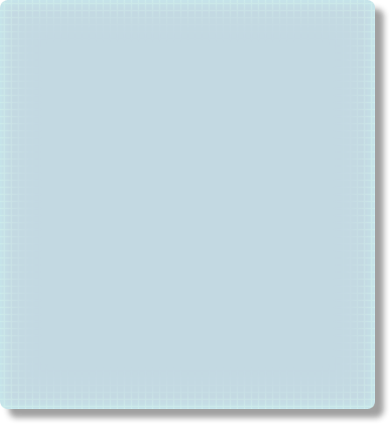
volumewindow.png
音量设置窗口
名称/图像推断 · index 182 · [0, 396, 497, 540]flowerline.png
花形提示选项分隔线
名称/图像推断 · index 183 · [0, 33, 579, 32]flowet_off_off.png
花形提示开/关选项（资源名为flowet）；第一个on/off为选项值，第二个为按钮显示状态
名称/图像推断 · index 184 · [0, 828, 170, 145]flowet_off_on.png
花形提示开/关选项（资源名为flowet）；第一个on/off为选项值，第二个为按钮显示状态
名称/图像推断 · index 185 · [342, 322, 170, 145]flowet_on_off.png
花形提示开/关选项（资源名为flowet）；第一个on/off为选项值，第二个为按钮显示状态
名称/图像推断 · index 186 · [171, 316, 170, 145]flowet_on_on.png
花形提示开/关选项（资源名为flowet）；第一个on/off为选项值，第二个为按钮显示状态
名称/图像推断 · index 187 · [0, 316, 170, 145]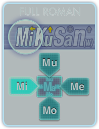
keyboard_fro_off.png
全罗马字键盘设置选项；未选中
名称/图像推断 · index 188 · [342, 66, 196, 255]keyboard_fro_on.png
全罗马字键盘设置选项；选中
名称/图像推断 · index 189 · [539, 316, 247, 315]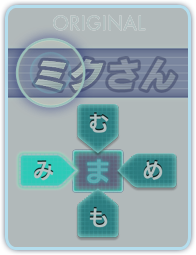
keyboard_ori_off.png
原始假名键盘设置选项；未选中
名称/图像推断 · index 190 · [828, 256, 196, 255]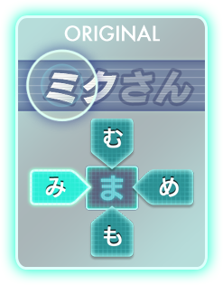
keyboard_ori_on.png
原始假名键盘设置选项；选中
名称/图像推断 · index 191 · [0, 512, 247, 315]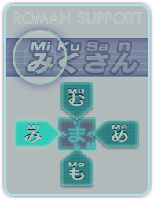
keyboard_rah_off.png
罗马字+假名键盘设置选项；未选中
名称/图像推断 · index 192 · [828, 0, 196, 255]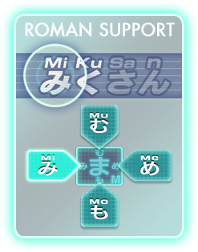
keyboard_rah_on.png
罗马字+假名键盘设置选项；选中
名称/图像推断 · index 193 · [580, 0, 247, 315]panelguide_off_off.png
面板引导开/关选项；第一个on/off为选项值，第二个为按钮显示状态
名称/图像推断 · index 194 · [248, 468, 129, 110]panelguide_off_on.png
面板引导开/关选项；第一个on/off为选项值，第二个为按钮显示状态
名称/图像推断 · index 195 · [378, 468, 129, 110]panelguide_on_off.png
面板引导开/关选项；第一个on/off为选项值，第二个为按钮显示状态
名称/图像推断 · index 196 · [248, 632, 129, 110]panelguide_on_on.png
面板引导开/关选项；第一个on/off为选项值，第二个为按钮显示状态
名称/图像推断 · index 197 · [171, 828, 129, 110]panelguideline.png
面板引导选项分隔线
名称/图像推断 · index 198 · [0, 0, 579, 32]copyright.png
标题画面的版权文字贴图
名称/图像推断 · index 199 · [162, 966, 446, 35]cubes_p.png
标题背景方块；变体 p
名称/图像推断 · index 200 · [856, 380, 168, 302]cubes_y.png
标题背景方块；变体 y
名称/图像推断 · index 201 · [661, 380, 194, 335]eye_00.png
标题角色眼部动画帧；变体 00
名称/图像推断 · index 202 · [81, 966, 80, 40]eye_01.png
标题角色眼部动画帧；变体 01
名称/图像推断 · index 203 · [0, 966, 80, 40]miku.png
标题画面的初音角色图
名称/图像推断 · index 204 · [0, 0, 660, 965]outerkey_b.png
标题外围彩色键块；变体 b
名称/图像推断 · index 205 · [661, 843, 79, 95]outerkey_p.png
标题外围彩色键块；变体 p
名称/图像推断 · index 206 · [759, 716, 88, 97]outerkey_r.png
标题外围彩色键块；变体 r
名称/图像推断 · index 207 · [856, 683, 101, 67]outerkey_t.png
标题外围彩色键块；变体 t
名称/图像推断 · index 208 · [661, 716, 97, 126]titlelogo_00.png
Miku Flick/02标题Logo分块；变体 00
名称/图像推断 · index 209 · [661, 0, 308, 189]titlelogo_01.png
Miku Flick/02标题Logo分块；变体 01
名称/图像推断 · index 210 · [661, 190, 307, 189]bg_shop.png
商店背景
名称/图像推断 · index 211 · [858, 390, 140, 140]credits_off.png
版权/制作名单入口；常态/未选中
名称/图像推断 · index 212 · [122, 965, 121, 30]credits_on.png
版权/制作名单入口；高亮/选中状态
名称/图像推断 · index 213 · [0, 965, 121, 30]detailwindow_00.png
详情窗口九宫格部件；变体 00
名称/图像推断 · index 214 · [719, 671, 123, 139]detailwindow_01.png
详情窗口九宫格部件；变体 01
名称/图像推断 · index 215 · [620, 811, 123, 139]detailwindow_02.png
详情窗口九宫格部件；变体 02
名称/图像推断 · index 216 · [595, 671, 123, 139]detailwindow_03.png
详情窗口九宫格部件；变体 03
名称/图像推断 · index 217 · [812, 531, 123, 139]detailwindow_04.png
详情窗口九宫格部件；变体 04
名称/图像推断 · index 218 · [496, 825, 123, 139]detailwindow_05.png
详情窗口九宫格部件；变体 05
名称/图像推断 · index 219 · [372, 825, 123, 139]detailwindow_06.png
详情窗口九宫格部件；变体 06
名称/图像推断 · index 220 · [248, 825, 123, 139]detailwindow_07.png
详情窗口九宫格部件；变体 07
名称/图像推断 · index 221 · [124, 825, 123, 139]detailwindow_08.png
详情窗口九宫格部件；变体 08
名称/图像推断 · index 222 · [0, 825, 123, 139]executionbutton_l_off.png
商店执行操作按钮底图；变体 l_off
名称/图像推断 · index 223 · [641, 337, 278, 52]executionbutton_l_on.png
商店执行操作按钮底图；变体 l_on
名称/图像推断 · index 224 · [641, 284, 278, 52]executionbutton_s_off.png
商店执行操作按钮底图；变体 s_off
名称/图像推断 · index 225 · [595, 522, 216, 43]executionbutton_s_on.png
商店执行操作按钮底图；变体 s_on
名称/图像推断 · index 226 · [641, 478, 216, 43]footer_off.png
商店底栏；常态/未选中
名称/图像推断 · index 227 · [641, 89, 297, 88]footer_on.png
商店底栏；高亮/选中状态
名称/图像推断 · index 228 · [641, 0, 297, 88]imagewindow.png
商店详情图片区域底框
名称/图像推断 · index 229 · [0, 512, 594, 312]manage_off.png
附加内容管理；常态/未选中
名称/图像推断 · index 230 · [939, 171, 48, 60]manage_on.png
附加内容管理；高亮/选中状态
名称/图像推断 · index 231 · [939, 110, 48, 60]new.png
新增内容标记
名称/图像推断 · index 232 · [988, 221, 34, 140]plate_off_manage.png
商店顶部选择底板；常态/未选中
名称/图像推断 · index 233 · [0, 282, 640, 140]plate_off_shop.png
商店顶部选择底板；常态/未选中
名称/图像推断 · index 234 · [0, 141, 640, 140]plate_on.png
商店顶部选择底板；高亮/选中状态
名称/图像推断 · index 235 · [0, 0, 640, 140]purchased_l_off.png
已购买状态；常态/未选中
名称/图像推断 · index 236 · [641, 231, 278, 52]purchased_l_on.png
已购买状态；高亮/选中状态
名称/图像推断 · index 237 · [641, 178, 278, 52]purchased_s_off.png
已购买状态；常态/未选中
名称/图像推断 · index 238 · [641, 434, 216, 43]purchased_s_on.png
已购买状态；高亮/选中状态
名称/图像推断 · index 239 · [641, 390, 216, 43]putin.png
添加/加入操作标签
名称/图像推断 · index 240 · [988, 184, 35, 36]remove.png
删除内容标签
名称/图像推断 · index 241 · [988, 110, 35, 36]reinstall.png
重新安装标签
名称/图像推断 · index 242 · [988, 147, 35, 36]ruledline.png
分隔横线
名称/图像推断 · index 243 · [0, 505, 617, 6]sample.png
试听或样例标签
名称/图像推断 · index 244 · [0, 996, 108, 21]searchwindow.png
商店搜索/信息窗口底图
名称/图像推断 · index 245 · [0, 423, 640, 81]shop_off.png
商店页面选择；常态/未选中
名称/图像推断 · index 246 · [939, 55, 79, 54]shop_on.png
商店页面选择；高亮/选中状态
名称/图像推断 · index 247 · [939, 0, 79, 54]shopback_off.png
从商店返回；常态/未选中
名称/图像推断 · index 248 · [620, 951, 115, 60]shopback_on.png
从商店返回；高亮/选中状态
名称/图像推断 · index 249 · [595, 566, 115, 60]dlwindow.png
下载窗口底图
名称/图像推断 · index 250 · [0, 260, 560, 477]footerplate.png
下载窗口底部底板
名称/图像推断 · index 251 · [0, 0, 640, 98]graphbase.png
下载进度条底板
名称/图像推断 · index 252 · [0, 738, 473, 25]graphbottom.png
下载进度条底端
名称/图像推断 · index 253 · [913, 0, 14, 21]graphmiddle.png
下载进度条可延伸中段
名称/图像推断 · index 254 · [561, 262, 208, 21]graphtop.png
下载进度条顶端
名称/图像推断 · index 255 · [898, 0, 14, 21]headerplate.png
下载窗口顶部底板
名称/图像推断 · index 256 · [0, 99, 640, 88]restore_off.png
恢复购买；常态/未选中
名称/图像推断 · index 257 · [641, 201, 227, 60]restore_on.png
恢复购买；高亮/选中状态
名称/图像推断 · index 258 · [641, 140, 227, 60]rswindow.png
恢复购买窗口底图
名称/图像推断 · index 259 · [0, 188, 640, 71]stop_off.png
停止下载/当前任务；常态/未选中
名称/图像推断 · index 260 · [641, 70, 256, 69]stop_on.png
停止下载/当前任务；高亮/选中状态
名称/图像推断 · index 261 · [641, 0, 256, 69]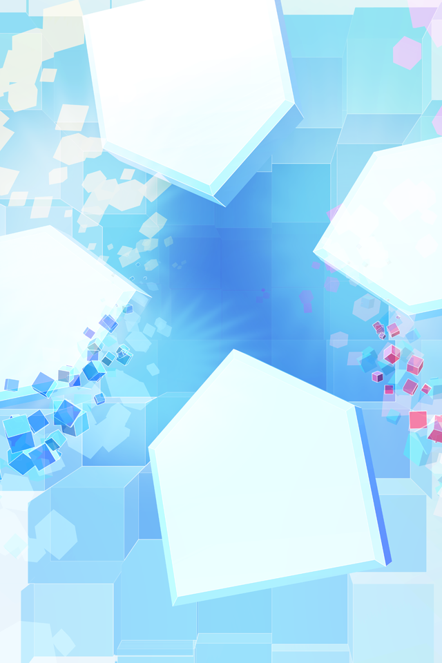
bg_title.png
标题背景
名称/图像推断 · index 262 · [0, 0, 640, 960]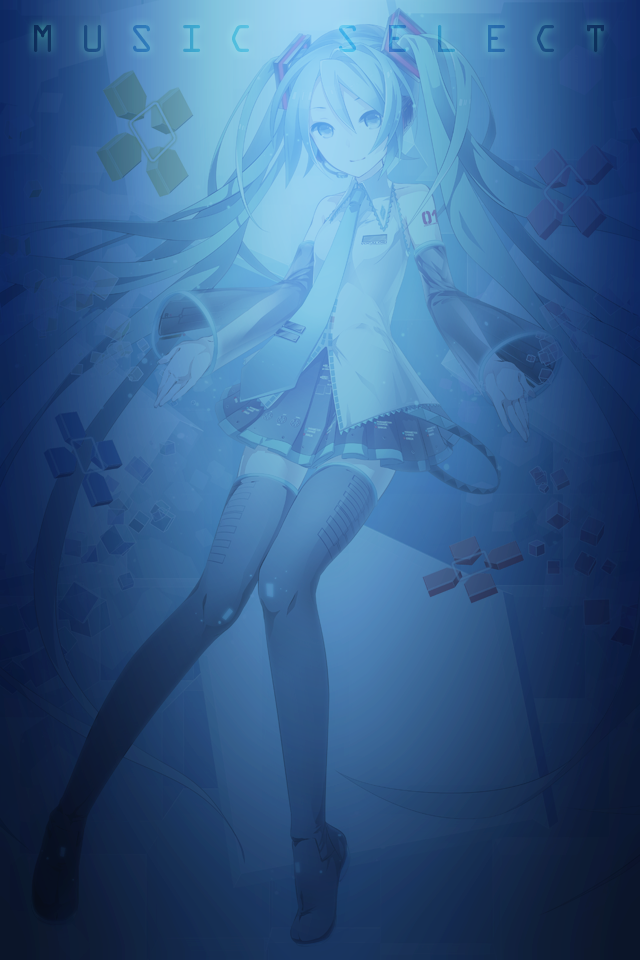
bg_misicselect.png
选曲背景（文件名保留misic拼写）
名称/图像推断 · index 263 · [0, 0, 640, 960]jacket_loading.png
封面载入占位图
名称/图像推断 · index 264 · [641, 0, 318, 318]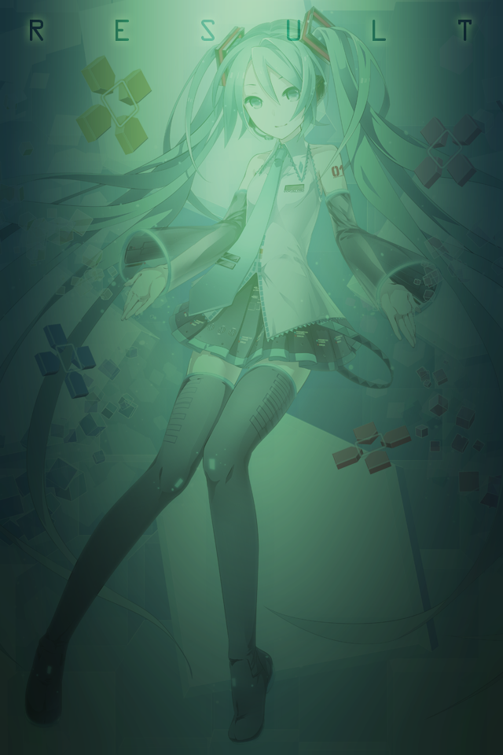
bg_result.png
结果背景
名称/图像推断 · index 265 · [0, 0, 640, 960]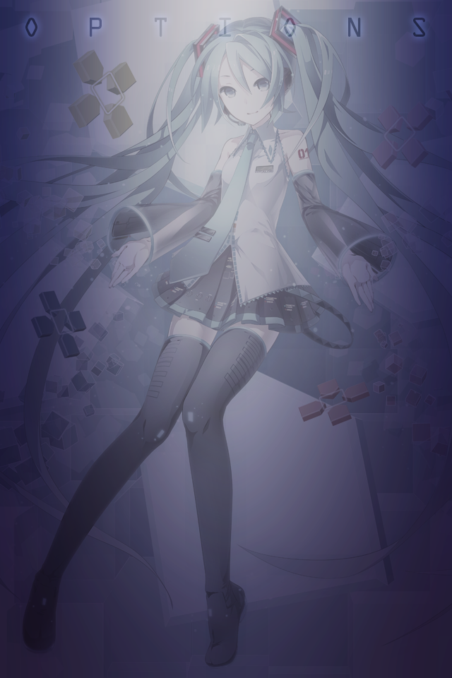
bg_options.png
设置背景
名称/图像推断 · index 266 · [0, 0, 640, 960]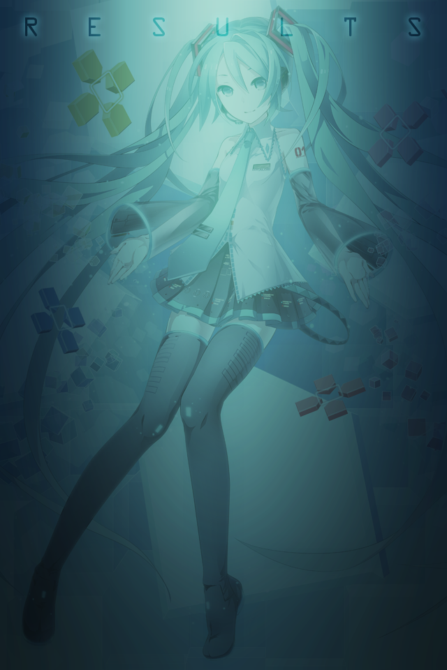
bg_results.png
结果详情背景
名称/图像推断 · index 267 · [0, 0, 640, 960]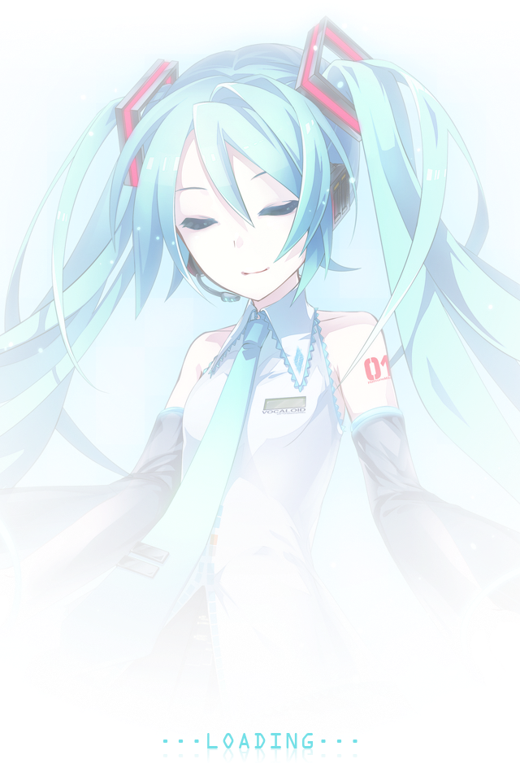
bg_starting.png
开始/启动背景
名称/图像推断 · index 268 · [0, 0, 640, 960]bg_loading.png
载入背景
名称/图像推断 · index 269 · [0, 0, 640, 960]linemove.png
载入画面移动线条
名称/图像推断 · index 270 · [0, 961, 821, 2]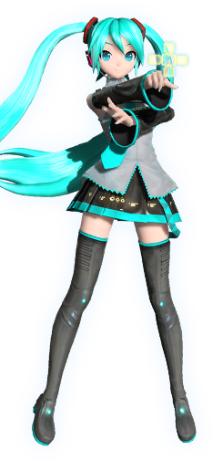
loadmiku_00.png
载入画面角色动画帧；变体 00
名称/图像推断 · index 271 · [641, 153, 234, 505]loadmiku_01.png
载入画面角色动画帧；变体 01
名称/图像推断 · index 272 · [822, 0, 200, 152]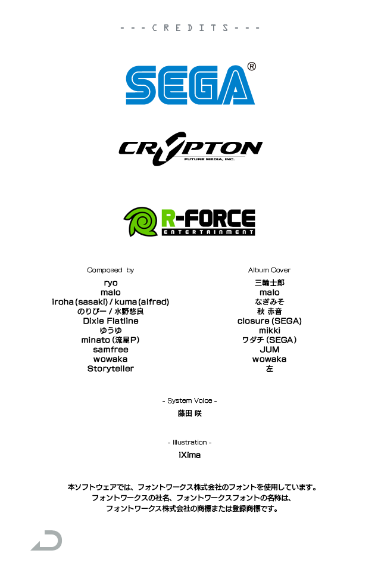
bg_credits_ja.png
日文版权/制作名单整页贴图
名称/图像推断 · index 448 · [0, 0, 640, 960]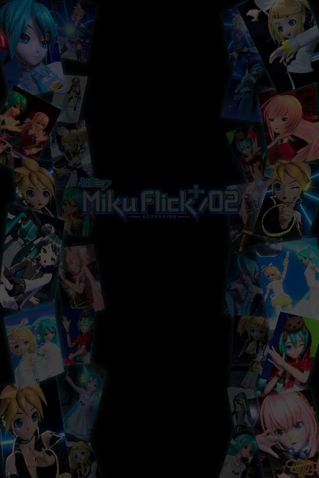
bg_ending.png
结尾滚动名单的装饰背景；名单文字由程序另行绘制
静态确认 · index 449 · [0, 0, 640, 960]fireworks_mik_00.png
游戏烟花/闪光动画帧；变体 00
名称/图像推断 · index 273 · [462, 351, 230, 230]fireworks_mik_01.png
游戏烟花/闪光动画帧；变体 01
名称/图像推断 · index 274 · [231, 764, 230, 230]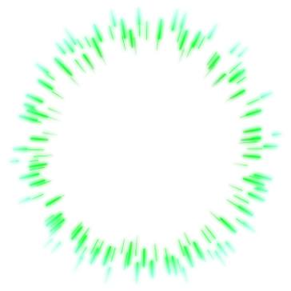
fireworks_mik_02.png
游戏烟花/闪光动画帧；变体 02
名称/图像推断 · index 275 · [0, 399, 364, 364]flickguide_int_off.png
间奏滑动提示；变体 off
名称/图像推断 · index 276 · [410, 0, 409, 350]flickguide_int_on.png
间奏滑动提示；变体 on
名称/图像推断 · index 277 · [0, 0, 409, 350]inputguide_00.png
输入方向/位置引导特效；变体 00
名称/图像推断 · index 278 · [820, 316, 82, 82]inputguide_01.png
输入方向/位置引导特效；变体 01
名称/图像推断 · index 279 · [903, 304, 82, 82]inputguide_02.png
输入方向/位置引导特效；变体 02
名称/图像推断 · index 280 · [820, 233, 82, 82]inputguide_03.png
输入方向/位置引导特效；变体 03
名称/图像推断 · index 281 · [915, 221, 82, 82]inputguide_04.png
输入方向/位置引导特效；变体 04
名称/图像推断 · index 282 · [915, 138, 82, 82]inputperfect.png
完美输入特效文字/符号
名称/图像推断 · index 283 · [820, 138, 94, 94]inputtarget.png
输入目标标记
名称/图像推断 · index 284 · [820, 0, 137, 137]ripple.png
触摸涟漪
名称/图像推断 · index 285 · [0, 764, 230, 230]afterimage_00.png
输入或目标的残影帧；变体 00
名称/图像推断 · index 286 · [725, 576, 102, 102]afterimage_01.png
输入或目标的残影帧；变体 01
名称/图像推断 · index 287 · [725, 473, 102, 102]afterimage_02.png
输入或目标的残影帧；变体 02
名称/图像推断 · index 288 · [725, 370, 102, 102]afterimage_03.png
输入或目标的残影帧；变体 03
名称/图像推断 · index 289 · [387, 0, 102, 102]afterimage_04.png
输入或目标的残影帧；变体 04
名称/图像推断 · index 290 · [495, 28, 102, 102]charactercircle.png
字符目标圆环
名称/图像推断 · index 291 · [374, 234, 120, 120]charactercircle_int.png
间奏目标圆环
名称/图像推断 · index 292 · [354, 355, 140, 143]combonumber_00.png
连击数字0
名称/图像推断 · index 293 · [992, 441, 29, 39]combonumber_01.png
连击数字1
名称/图像推断 · index 294 · [994, 401, 29, 39]combonumber_02.png
连击数字2
名称/图像推断 · index 295 · [994, 361, 29, 39]combonumber_03.png
连击数字3
名称/图像推断 · index 296 · [495, 450, 29, 39]combonumber_04.png
连击数字4
名称/图像推断 · index 297 · [495, 410, 29, 39]combonumber_05.png
连击数字5
名称/图像推断 · index 298 · [706, 234, 29, 39]combonumber_06.png
连击数字6
名称/图像推断 · index 299 · [495, 234, 29, 39]combonumber_07.png
连击数字7
名称/图像推断 · index 300 · [526, 234, 29, 39]combonumber_08.png
连击数字8
名称/图像推断 · index 301 · [563, 211, 29, 39]combonumber_09.png
连击数字9
名称/图像推断 · index 302 · [563, 171, 29, 39]combonumber_10.png
连击标签或符号贴图10（以图片内容为准）
名称/图像推断 · index 303 · [563, 131, 29, 39]combonumber_11.png
连击标签或符号贴图11（以图片内容为准）
名称/图像推断 · index 304 · [593, 234, 72, 39]combonumber_12.png
连击标签或符号贴图12（以图片内容为准）
名称/图像推断 · index 305 · [666, 234, 39, 39]emphasiscircle.png
强调圆环
名称/图像推断 · index 306 · [519, 589, 99, 98]evaluation_00.png
COOL判定文字贴图；数值判定规则见mechanics.md
名称/图像推断 · index 307 · [828, 641, 142, 69]evaluation_01.png
FINE判定文字贴图；数值判定规则见mechanics.md
名称/图像推断 · index 308 · [828, 571, 142, 69]evaluation_02.png
SAFE判定文字贴图；数值判定规则见mechanics.md
名称/图像推断 · index 309 · [849, 501, 142, 69]evaluation_03.png
SAD判定文字贴图；数值判定规则见mechanics.md
名称/图像推断 · index 310 · [849, 431, 142, 69]evaluation_04.png
WORST判定文字贴图；数值判定规则见mechanics.md
名称/图像推断 · index 311 · [851, 361, 142, 69]flickguide_off_00.png
滑动方向引导；变体 off_00
名称/图像推断 · index 312 · [736, 234, 114, 135]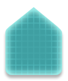
flickguide_off_01.png
滑动方向引导；变体 off_01
名称/图像推断 · index 313 · [610, 274, 114, 135]flickguide_off_02.png
滑动方向引导；变体 off_02
名称/图像推断 · index 314 · [851, 258, 154, 102]flickguide_off_03.png
滑动方向引导；变体 off_03
名称/图像推断 · index 315 · [408, 131, 154, 102]flickguide_on_00.png
滑动方向引导；变体 on_00
名称/图像推断 · index 316 · [526, 410, 114, 135]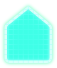
flickguide_on_01.png
滑动方向引导；变体 on_01
名称/图像推断 · index 317 · [495, 274, 114, 135]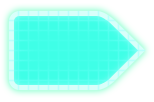
flickguide_on_02.png
滑动方向引导；变体 on_02
名称/图像推断 · index 318 · [253, 131, 154, 102]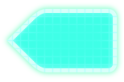
flickguide_on_03.png
滑动方向引导；变体 on_03
名称/图像推断 · index 319 · [860, 155, 154, 102]guidecursor.png
引导光标
名称/图像推断 · index 320 · [253, 0, 133, 114]guidepanel_off_00.png
键盘引导面板；变体 off_00
名称/图像推断 · index 321 · [519, 916, 127, 108]guidepanel_off_01.png
键盘引导面板；变体 off_01
名称/图像推断 · index 322 · [519, 807, 127, 108]guidepanel_off_02.png
键盘引导面板；变体 off_02
名称/图像推断 · index 323 · [391, 914, 127, 108]guidepanel_off_03.png
键盘引导面板；变体 off_03
名称/图像推断 · index 324 · [391, 805, 127, 108]guidepanel_off_04.png
键盘引导面板；变体 off_04
名称/图像推断 · index 325 · [602, 698, 127, 108]guidepanel_on_00.png
键盘引导面板；变体 on_00
名称/图像推断 · index 326 · [391, 696, 127, 108]guidepanel_on_01.png
键盘引导面板；变体 on_01
名称/图像推断 · index 327 · [391, 587, 127, 108]guidepanel_on_02.png
键盘引导面板；变体 on_02
名称/图像推断 · index 328 · [263, 820, 127, 108]guidepanel_on_03.png
键盘引导面板；变体 on_03
名称/图像推断 · index 329 · [263, 594, 127, 108]guidepanel_on_04.png
键盘引导面板；变体 on_04
名称/图像推断 · index 330 · [263, 711, 127, 108]highscore_00.png
最高分数字0
名称/图像推断 · index 331 · [828, 500, 20, 25]highscore_01.png
最高分数字1
名称/图像推断 · index 332 · [828, 474, 20, 25]highscore_02.png
最高分数字2
名称/图像推断 · index 333 · [828, 448, 20, 25]highscore_03.png
最高分数字3
名称/图像推断 · index 334 · [828, 422, 20, 25]highscore_04.png
最高分数字4
名称/图像推断 · index 335 · [828, 396, 20, 25]highscore_05.png
最高分数字5
名称/图像推断 · index 336 · [828, 370, 20, 25]highscore_06.png
最高分数字6
名称/图像推断 · index 337 · [471, 103, 20, 25]highscore_07.png
最高分数字7
名称/图像推断 · index 338 · [450, 103, 20, 25]highscore_08.png
最高分数字8
名称/图像推断 · index 339 · [429, 103, 20, 25]highscore_09.png
最高分数字9
名称/图像推断 · index 340 · [408, 103, 20, 25]highscore_10.png
最高分标签或符号贴图10（以图片内容为准）
名称/图像推断 · index 341 · [387, 103, 20, 25]highscore_11.png
最高分标签或符号贴图11（以图片内容为准）
名称/图像推断 · index 342 · [495, 0, 105, 27]inputbar.png
输入提示条
名称/图像推断 · index 343 · [161, 556, 439, 30]inputcursor.png
输入位置光标
名称/图像推断 · index 344 · [280, 929, 69, 68]insidewhirl.png
内侧旋转装饰
名称/图像推断 · index 345 · [253, 234, 120, 120]menugradation.png
暂停菜单渐变遮罩
名称/图像推断 · index 346 · [0, 0, 160, 586]microphonemeter_00.png
演唱/Gauge显示部件；变体 00
名称/图像推断 · index 347 · [0, 587, 146, 388]microphonemeter_01.png
演唱/Gauge显示部件；变体 01
名称/图像推断 · index 348 · [147, 587, 115, 388]microphonemeter_02.png
演唱/Gauge显示部件；变体 02
名称/图像推断 · index 349 · [161, 0, 91, 362]outsidecircle.png
目标外圆
名称/图像推断 · index 350 · [862, 0, 154, 154]outsidewhirl.png
外侧旋转装饰
名称/图像推断 · index 351 · [161, 363, 192, 192]pausebutton.png
暂停按钮
名称/图像推断 · index 352 · [354, 499, 51, 51]quaver_00.png
音符/节奏提示装饰；变体 00
名称/图像推断 · index 353 · [641, 502, 83, 91]quaver_01.png
音符/节奏提示装饰；变体 01
名称/图像推断 · index 354 · [519, 688, 82, 103]quaver_02.png
音符/节奏提示装饰；变体 02
名称/图像推断 · index 355 · [619, 594, 82, 103]quaver_03.png
音符/节奏提示装饰；变体 03
名称/图像推断 · index 356 · [641, 410, 83, 91]rail_00.png
音符运动轨道；变体 00
名称/图像推断 · index 357 · [601, 117, 258, 116]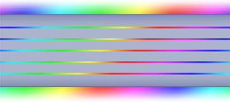
rail_01.png
音符运动轨道；变体 01
名称/图像推断 · index 358 · [601, 0, 260, 116]score_00.png
当前得分数字0
名称/图像推断 · index 359 · [601, 546, 39, 42]score_01.png
当前得分数字1
名称/图像推断 · index 360 · [486, 499, 39, 42]score_02.png
当前得分数字2
名称/图像推断 · index 361 · [446, 499, 39, 42]score_03.png
当前得分数字3
名称/图像推断 · index 362 · [406, 499, 39, 42]score_04.png
当前得分数字4
名称/图像推断 · index 363 · [240, 976, 39, 42]score_05.png
当前得分数字5
名称/图像推断 · index 364 · [200, 976, 39, 42]score_06.png
当前得分数字6
名称/图像推断 · index 365 · [160, 976, 39, 42]score_07.png
当前得分数字7
名称/图像推断 · index 366 · [120, 976, 39, 42]score_08.png
当前得分数字8
名称/图像推断 · index 367 · [80, 976, 39, 42]score_09.png
当前得分数字9
名称/图像推断 · index 368 · [40, 976, 39, 42]score_10.png
当前得分标签或符号贴图10（以图片内容为准）
名称/图像推断 · index 369 · [0, 976, 39, 42]fgcharacter_ori_00.png
假名滑动引导字符字形第00项；此编号不是Unicode码点
名称/图像推断 · index 370 · [290, 719, 57, 57]fgcharacter_ori_01.png
假名滑动引导字符字形第01项；此编号不是Unicode码点
名称/图像推断 · index 371 · [232, 719, 57, 57]fgcharacter_ori_02.png
假名滑动引导字符字形第02项；此编号不是Unicode码点
名称/图像推断 · index 372 · [174, 951, 57, 57]fgcharacter_ori_03.png
假名滑动引导字符字形第03项；此编号不是Unicode码点
名称/图像推断 · index 373 · [174, 893, 57, 57]fgcharacter_ori_04.png
假名滑动引导字符字形第04项；此编号不是Unicode码点
名称/图像推断 · index 374 · [174, 835, 57, 57]fgcharacter_ori_05.png
假名滑动引导字符字形第05项；此编号不是Unicode码点
名称/图像推断 · index 375 · [174, 777, 57, 57]fgcharacter_ori_06.png
假名滑动引导字符字形第06项；此编号不是Unicode码点
名称/图像推断 · index 376 · [174, 719, 57, 57]fgcharacter_ori_07.png
假名滑动引导字符字形第07项；此编号不是Unicode码点
名称/图像推断 · index 377 · [406, 661, 57, 57]fgcharacter_ori_08.png
假名滑动引导字符字形第08项；此编号不是Unicode码点
名称/图像推断 · index 378 · [348, 661, 57, 57]fgcharacter_ori_09.png
假名滑动引导字符字形第09项；此编号不是Unicode码点
名称/图像推断 · index 379 · [290, 661, 57, 57]fgcharacter_ori_10.png
假名滑动引导字符字形第10项；此编号不是Unicode码点
名称/图像推断 · index 380 · [232, 661, 57, 57]fgcharacter_ori_11.png
假名滑动引导字符字形第11项；此编号不是Unicode码点
名称/图像推断 · index 381 · [174, 661, 57, 57]fgcharacter_ori_12.png
假名滑动引导字符字形第12项；此编号不是Unicode码点
名称/图像推断 · index 382 · [116, 951, 57, 57]fgcharacter_ori_13.png
假名滑动引导字符字形第13项；此编号不是Unicode码点
名称/图像推断 · index 383 · [116, 893, 57, 57]fgcharacter_ori_14.png
假名滑动引导字符字形第14项；此编号不是Unicode码点
名称/图像推断 · index 384 · [116, 835, 57, 57]fgcharacter_ori_15.png
假名滑动引导字符字形第15项；此编号不是Unicode码点
名称/图像推断 · index 385 · [116, 777, 57, 57]fgcharacter_ori_16.png
假名滑动引导字符字形第16项；此编号不是Unicode码点
名称/图像推断 · index 386 · [116, 719, 57, 57]fgcharacter_ori_17.png
假名滑动引导字符字形第17项；此编号不是Unicode码点
名称/图像推断 · index 387 · [116, 661, 57, 57]fgcharacter_ori_18.png
假名滑动引导字符字形第18项；此编号不是Unicode码点
名称/图像推断 · index 388 · [406, 603, 57, 57]fgcharacter_ori_19.png
假名滑动引导字符字形第19项；此编号不是Unicode码点
名称/图像推断 · index 389 · [348, 603, 57, 57]fgcharacter_ori_20.png
假名滑动引导字符字形第20项；此编号不是Unicode码点
名称/图像推断 · index 390 · [290, 603, 57, 57]fgcharacter_ori_21.png
假名滑动引导字符字形第21项；此编号不是Unicode码点
名称/图像推断 · index 391 · [232, 603, 57, 57]fgcharacter_ori_22.png
假名滑动引导字符字形第22项；此编号不是Unicode码点
名称/图像推断 · index 392 · [174, 603, 57, 57]fgcharacter_ori_23.png
假名滑动引导字符字形第23项；此编号不是Unicode码点
名称/图像推断 · index 393 · [116, 603, 57, 57]fgcharacter_ori_24.png
假名滑动引导字符字形第24项；此编号不是Unicode码点
名称/图像推断 · index 394 · [58, 951, 57, 57]fgcharacter_ori_25.png
假名滑动引导字符字形第25项；此编号不是Unicode码点
名称/图像推断 · index 395 · [58, 893, 57, 57]fgcharacter_ori_26.png
假名滑动引导字符字形第26项；此编号不是Unicode码点
名称/图像推断 · index 396 · [58, 835, 57, 57]fgcharacter_ori_27.png
假名滑动引导字符字形第27项；此编号不是Unicode码点
名称/图像推断 · index 397 · [58, 777, 57, 57]fgcharacter_ori_28.png
假名滑动引导字符字形第28项；此编号不是Unicode码点
名称/图像推断 · index 398 · [58, 719, 57, 57]fgcharacter_ori_29.png
假名滑动引导字符字形第29项；此编号不是Unicode码点
名称/图像推断 · index 399 · [58, 661, 57, 57]fgcharacter_ori_30.png
假名滑动引导字符字形第30项；此编号不是Unicode码点
名称/图像推断 · index 400 · [58, 603, 57, 57]fgcharacter_ori_31.png
假名滑动引导字符字形第31项；此编号不是Unicode码点
名称/图像推断 · index 401 · [406, 545, 57, 57]fgcharacter_ori_32.png
假名滑动引导字符字形第32项；此编号不是Unicode码点
名称/图像推断 · index 402 · [348, 545, 57, 57]fgcharacter_ori_33.png
假名滑动引导字符字形第33项；此编号不是Unicode码点
名称/图像推断 · index 403 · [290, 545, 57, 57]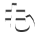
fgcharacter_ori_34.png
假名滑动引导字符字形第34项；此编号不是Unicode码点
名称/图像推断 · index 404 · [232, 545, 57, 57]fgcharacter_ori_35.png
假名滑动引导字符字形第35项；此编号不是Unicode码点
名称/图像推断 · index 405 · [174, 545, 57, 57]fgcharacter_ori_36.png
假名滑动引导字符字形第36项；此编号不是Unicode码点
名称/图像推断 · index 406 · [116, 545, 57, 57]fgcharacter_ori_37.png
假名滑动引导字符字形第37项；此编号不是Unicode码点
名称/图像推断 · index 407 · [58, 545, 57, 57]fgcharacter_ori_38.png
假名滑动引导字符字形第38项；此编号不是Unicode码点
名称/图像推断 · index 408 · [0, 951, 57, 57]fgcharacter_ori_39.png
假名滑动引导字符字形第39项；此编号不是Unicode码点
名称/图像推断 · index 409 · [0, 893, 57, 57]fgcharacter_ori_40.png
假名滑动引导字符字形第40项；此编号不是Unicode码点
名称/图像推断 · index 410 · [0, 835, 57, 57]fgcharacter_ori_41.png
假名滑动引导字符字形第41项；此编号不是Unicode码点
名称/图像推断 · index 411 · [0, 777, 57, 57]fgcharacter_ori_42.png
假名滑动引导字符字形第42项；此编号不是Unicode码点
名称/图像推断 · index 412 · [0, 719, 57, 57]fgcharacter_ori_43.png
假名滑动引导字符字形第43项；此编号不是Unicode码点
名称/图像推断 · index 413 · [0, 661, 57, 57]fgcharacter_ori_44.png
假名滑动引导字符字形第44项；此编号不是Unicode码点
名称/图像推断 · index 414 · [0, 603, 57, 57]fgcharacter_ori_45.png
假名滑动引导字符字形第45项；此编号不是Unicode码点
名称/图像推断 · index 415 · [0, 545, 57, 57]flickpanel_ori_off_00.png
原始假名十键面板第00项；常态
名称/图像推断 · index 416 · [384, 436, 127, 108]flickpanel_ori_off_01.png
原始假名十键面板第01项；常态
名称/图像推断 · index 417 · [256, 436, 127, 108]flickpanel_ori_off_02.png
原始假名十键面板第02项；常态
名称/图像推断 · index 418 · [128, 436, 127, 108]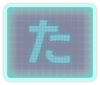
flickpanel_ori_off_03.png
原始假名十键面板第03项；常态
名称/图像推断 · index 419 · [0, 436, 127, 108]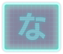
flickpanel_ori_off_04.png
原始假名十键面板第04项；常态
名称/图像推断 · index 420 · [384, 327, 127, 108]flickpanel_ori_off_05.png
原始假名十键面板第05项；常态
名称/图像推断 · index 421 · [256, 327, 127, 108]flickpanel_ori_off_06.png
原始假名十键面板第06项；常态
名称/图像推断 · index 422 · [128, 327, 127, 108]flickpanel_ori_off_07.png
原始假名十键面板第07项；常态
名称/图像推断 · index 423 · [0, 327, 127, 108]flickpanel_ori_off_08.png
原始假名十键面板第08项；常态
名称/图像推断 · index 424 · [384, 218, 127, 108]flickpanel_ori_off_09.png
原始假名十键面板第09项；常态
名称/图像推断 · index 425 · [256, 218, 127, 108]flickpanel_ori_on_00.png
原始假名十键面板第00项；按下/高亮
名称/图像推断 · index 426 · [128, 218, 127, 108]flickpanel_ori_on_01.png
原始假名十键面板第01项；按下/高亮
名称/图像推断 · index 427 · [0, 218, 127, 108]flickpanel_ori_on_02.png
原始假名十键面板第02项；按下/高亮
名称/图像推断 · index 428 · [384, 109, 127, 108]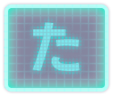
flickpanel_ori_on_03.png
原始假名十键面板第03项；按下/高亮
名称/图像推断 · index 429 · [256, 109, 127, 108]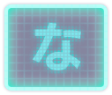
flickpanel_ori_on_04.png
原始假名十键面板第04项；按下/高亮
名称/图像推断 · index 430 · [128, 109, 127, 108]flickpanel_ori_on_05.png
原始假名十键面板第05项；按下/高亮
名称/图像推断 · index 431 · [0, 109, 127, 108]flickpanel_ori_on_06.png
原始假名十键面板第06项；按下/高亮
名称/图像推断 · index 432 · [384, 0, 127, 108]flickpanel_ori_on_07.png
原始假名十键面板第07项；按下/高亮
名称/图像推断 · index 433 · [256, 0, 127, 108]flickpanel_ori_on_08.png
原始假名十键面板第08项；按下/高亮
名称/图像推断 · index 434 · [128, 0, 127, 108]flickpanel_ori_on_09.png
原始假名十键面板第09项；按下/高亮
名称/图像推断 · index 435 · [0, 0, 127, 108]art_00_01_00.png
恋は戦争封面插画；按歌曲表与图像对应
名称/图像推断 · index 436 · [513, 576, 318, 318]art_00_01_01.png
ハジメテノオト封面插画；按歌曲表与图像对应
名称/图像推断 · index 437 · [513, 257, 318, 318]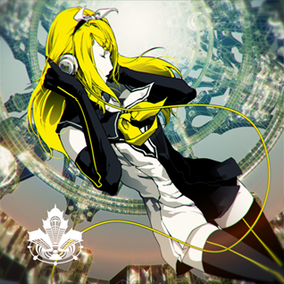
art_00_01_02.png
炉心融解封面插画；按歌曲表与图像对应
名称/图像推断 · index 438 · [0, 0, 318, 318]logo_00_01_00.png
恋は戦争歌曲标题Logo；按歌曲表与图像对应
名称/图像推断 · index 439 · [0, 576, 512, 256]logo_00_01_01.png
ハジメテノオト歌曲标题Logo；按歌曲表与图像对应
名称/图像推断 · index 440 · [319, 0, 512, 256]logo_00_01_02.png
炉心融解歌曲标题Logo；按歌曲表与图像对应
名称/图像推断 · index 441 · [0, 319, 512, 256]screenshot_01_01_00.png
カンタレラ介绍截图；图片内容可识别，动态商店实际引用待核
名称/图像推断 · index 442 · [165, 0, 164, 244]screenshot_01_01_01.png
ジェミニ介绍截图；图片内容可识别，动态商店实际引用待核
名称/图像推断 · index 443 · [0, 245, 164, 244]screenshot_01_01_02.png
カラフル×セクシィ介绍截图；图片内容可识别，动态商店实际引用待核
名称/图像推断 · index 444 · [0, 0, 164, 244]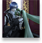
thumbnail_01_01_00.png
カンタレラ介绍缩略图；图片内容可识别，动态商店实际引用待核
名称/图像推断 · index 445 · [330, 74, 72, 73]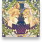
thumbnail_01_01_01.png
ジェミニ介绍缩略图；图片内容可识别，动态商店实际引用待核
名称/图像推断 · index 446 · [403, 0, 72, 73]thumbnail_01_01_02.png
カラフル×セクシィ介绍缩略图；图片内容可识别，动态商店实际引用待核
名称/图像推断 · index 447 · [330, 0, 72, 73]